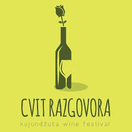
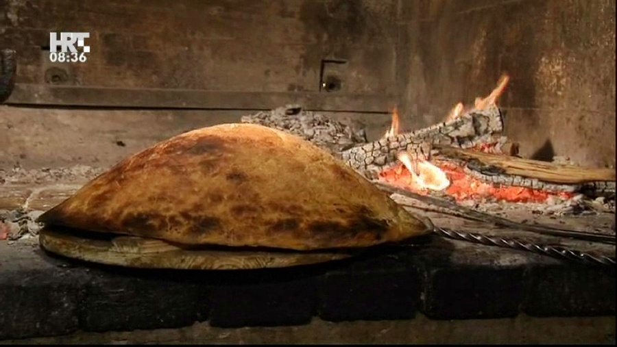
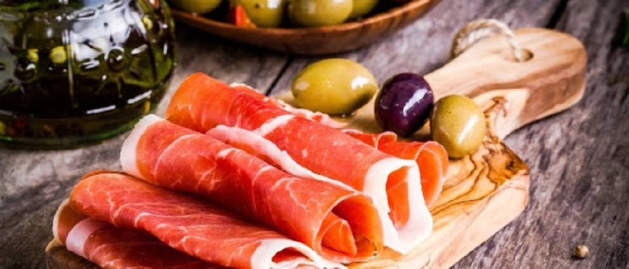

Klikni na sliku i saznaj više.
Najpoznatiji imotski specijaliteti su zasigurno pršut, sir, janjetina, sarme, kruh ispod „sača“ (peke), rašćika, zelje, pura i kiselo "mliko" ,a od slastica tu su imotska torta, rafioli, breskvice.Bez tih jela ne može proći nikoja „fešta“ (npr.rođendani,pričesti,krizme)...
 